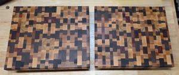

Tap image to view full size
Pattern Designer: Loading...
Primary Wood Types Used: Various including Maple, Beech, Yellowheart, Redheart, Cherry, Red Oak, Ipe,...
Description: I had fun making these chaos boards, built from several years of accumulated scraps
I started with 81 scrap pieces of various species, width, length, thickness.
Next arranged them in 14 groups of similar but not identical dimensions.
After some milling and lots of gluing arrived at this.
In hindsight I may have made the pattern a bit more random but I am still pleased with how they turned out.
What is refreshing is the freedom to not worry about maintaining tight tolerances on highly regular patterned designs.